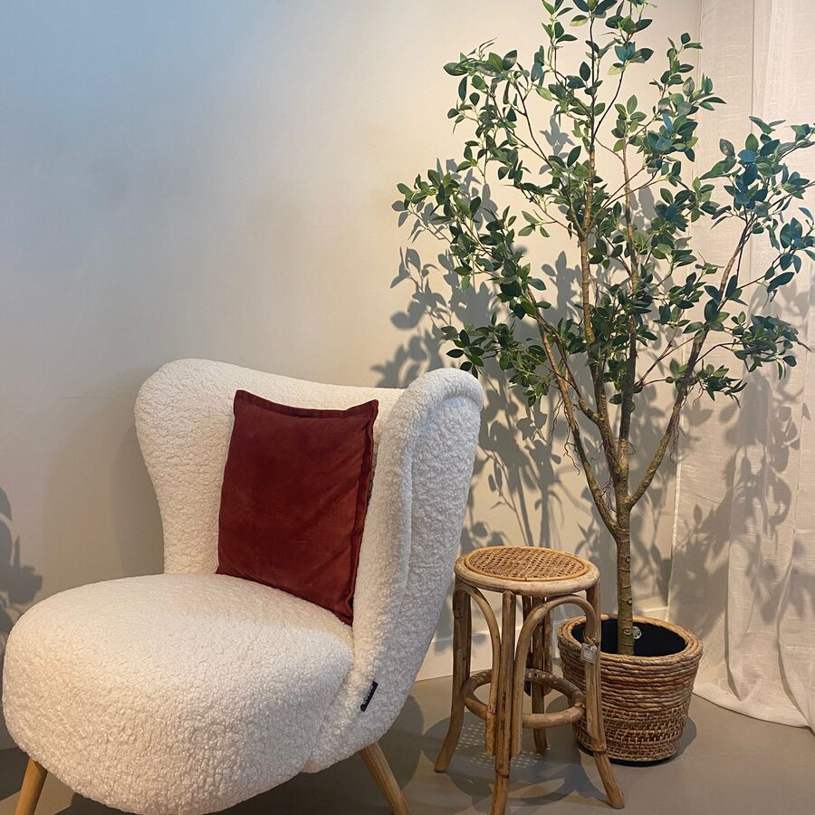
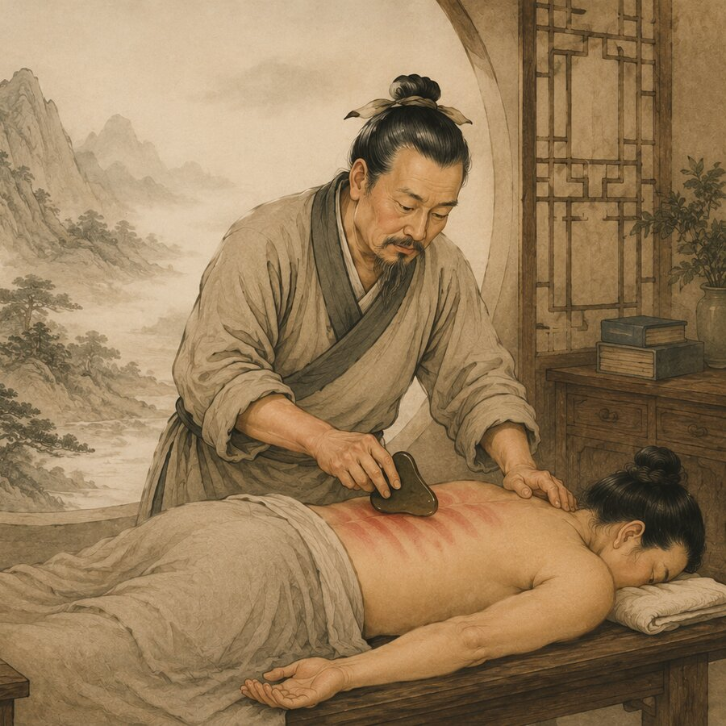
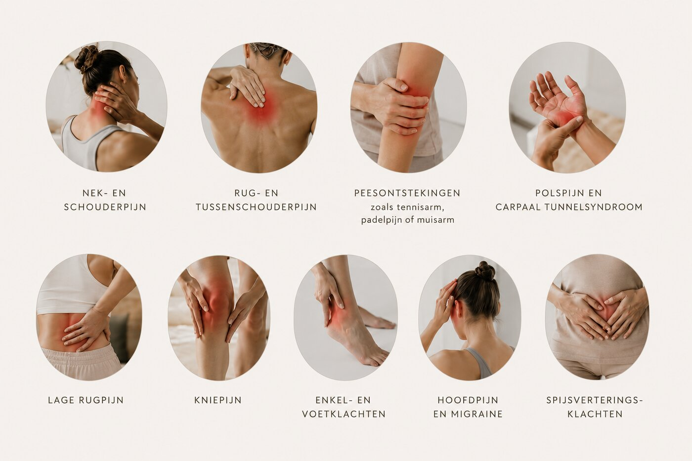
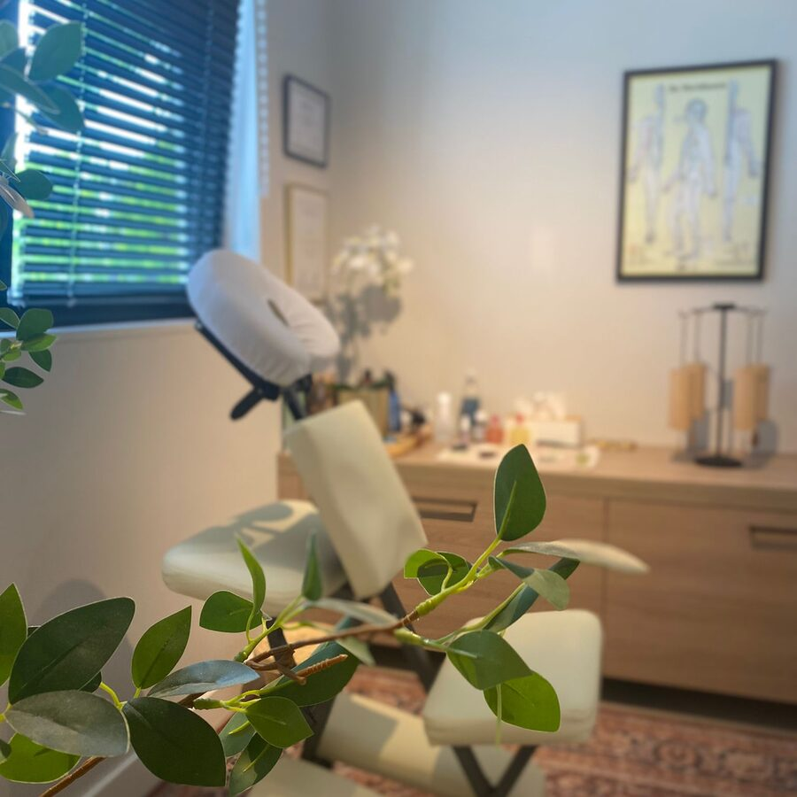
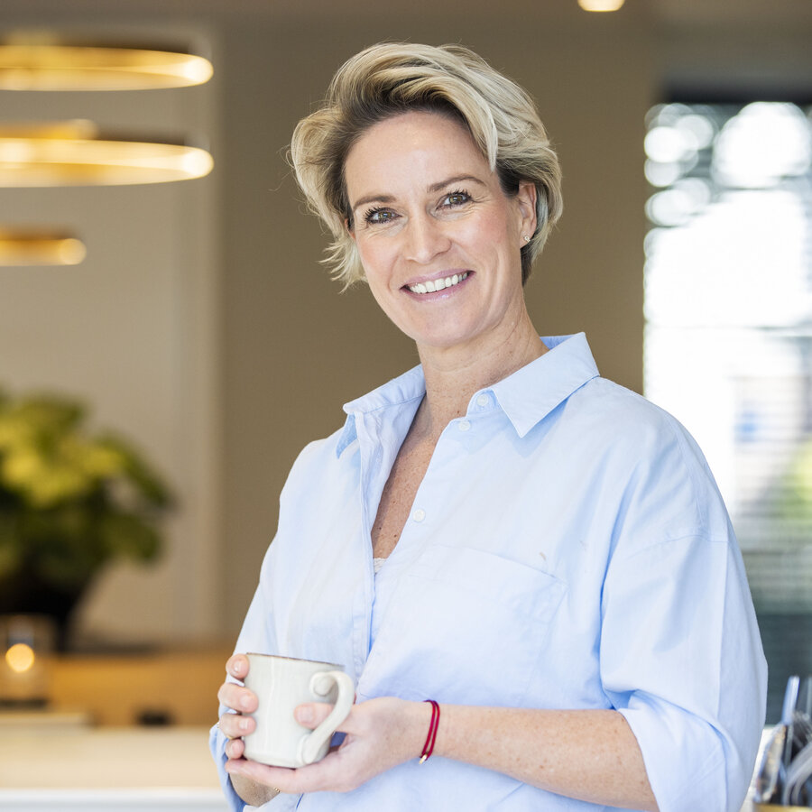
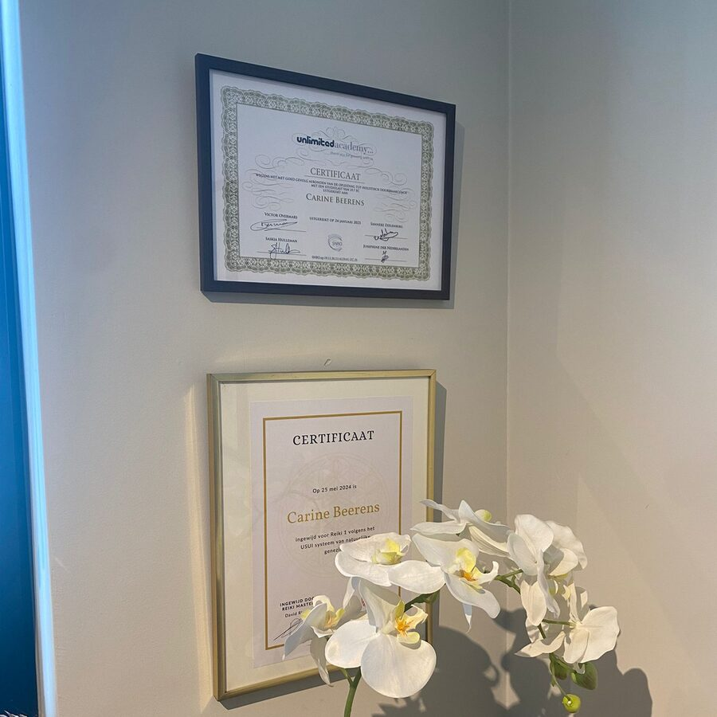

Ik werk met een steen, wat olie, en een lichaam dat allang weet wat het kwijt wil. Guasha is een eeuwenoude techniek uit de Chinese geneeskunde — geen massage, maar een manier om vastzittende spanning letterlijk naar de oppervlakte te laten komen. Wat ik keer op keer zie: het lichaam laat pas los als het zich veilig voelt. Daar begint het.
Ik vind het bijzonder dat wat ik nu doe, al eeuwenlang bestaat. Guasha gaat terug tot het oude China, waar dorpsbewoners de huid schraapten met een gladde steen om spanning en klachten te verlichten — lang voordat het een naam had.
In de Ming-dynastie (1368–1644) schreef arts Chang Ching Yueh de methode voor het eerst op: het binnenste van het lichaam staat in verbinding met het oppervlak, en wat vastzit kan via de huid weer gaan stromen. Dat is precies wat ik elke dag terugzie op de behandeltafel.
Van waterbuffelhoorn tot jade, van Chinese dorpen tot klinieken wereldwijd — de essentie bleef hetzelfde. Sinds acupuncturiste Arya Nielsen de techniek in 1976 naar het westen bracht, wint guasha ook hier steeds meer terrein.
Ik leer het vak bij Santai Opleidingen, in diezelfde traditie: met een steen, gerichte druk, en het vertrouwen dat een lichaam weet hoe het zichzelf herstelt.

Wat ik doe is eigenlijk heel eenvoudig. Guasha — letterlijk "sha schrapen" — is een techniek waarbij ik met een gladde steen, meestal jade of rozenkwarts, met gerichte druk over de met olie ingesmeerde huid strijk. Niet willekeurig: ik volg de meridianen, de banen waarlangs Qi — je levensenergie — door het lichaam stroomt.
Waar Qi vastzit — door spanning, overbelasting, kou, of iets dat al veel langer wordt meegedragen — ontstaat stagnatie. Ik voel dat vaak letterlijk onder mijn handen: stijfheid, een dof gebied, weefsel dat niet meebeweegt. Door te schrapen help ik die stagnatie naar de oppervlakte te brengen.
Dat is het moment waarop sha verschijnt: kleine rode tot paarsrode vlekjes in de huid, vergelijkbaar met puntbloedingen. Geen blauwe plek in de negatieve zin — sha is zichtbaar bewijs dat vastzittend bloed en verouderde Qi zijn losgemaakt en aan de oppervlakte zijn gebracht, zodat het lichaam het via de bloedbaan en het lymfestelsel kan afvoeren.
In de Traditionele Chinese Geneeskunde wordt het lichaam niet gezien als een machine met losse onderdelen, maar als een landschap waar energie doorheen stroomt. Die energie heet Qi (uitgesproken als "chi") — je levenskracht. Qi houdt organen actief, warmt het lichaam, beschermt tegen ziekte en zorgt dat bloed, vocht en emoties in beweging blijven.
Qi stroomt via vaste banen door het lichaam: de meridianen. Elke meridiaan is verbonden met een orgaan, een functie en — dat is wat guasha en TCM zo interessant maakt — een emotie. Zolang Qi vrij kan stromen, ben je gezond, flexibel en veerkrachtig. Pas als Qi ergens vastloopt, ontstaat er een klacht.
Stagnatie ontstaat op meerdere manieren: door fysieke overbelasting, door kou of vocht die van buitenaf binnendringt, maar minstens zo vaak door emoties die geen uitweg vinden. Opgekropte woede, chronische zorgen, verdriet dat niet verwerkt is — TCM ziet dit niet als "psychisch" apart van het lichaam, maar als energie die letterlijk vastzit in een orgaan en de bijbehorende meridiaan.
Dat is precies waar guasha aangrijpt. Door langs de meridiaanbanen te schrapen, help ik vastzittende Qi weer op gang te brengen — je voelt het fysiek, en vanuit de TCM gebeurt het net zo goed energetisch.
TCM verdeelt lichaam en emotie in vijf elementen — Hout, Vuur, Aarde, Metaal en Water. Elk element hoort bij twee organen, een seizoen, en een emotie die in balans kracht geeft en uit balans juist blokkeert. Wat mij raakt aan deze leer: ieder orgaan draagt niet alleen een functie, maar ook een gevoel. Klik op een element in het wiel.
Het element van groei, richting en visie — zoals een boom die naar het licht groeit. Hout geeft je de kracht om plannen te maken en ze door te zetten.
Guasha wordt van oudsher gebruikt bij uiteenlopende spannings- en bewegingsklachten. Onderstaand een greep uit de klachten waarmee cliënten bij mij komen.

Ook bij frozen shoulder, ischias, reuma, hooikoorts, aanhoudende vermoeidheid en zware, moe aanvoelende benen (spataderen) wordt guasha regelmatig ingezet.
Guasha is een aanvullende, holistische behandelmethode vanuit de Traditionele Chinese Geneeskunde. Het vervangt geen diagnose of behandeling door een arts of specialist. Twijfel je over een klacht, overleg dan eerst met je huisarts.
Wat ik telkens weer bijzonder vind aan guasha: het werkt op twee niveaus tegelijk. Fysiek maakt de druk van de steen vastzittend bindweefsel los, verbetert het lokaal de doorbloeding en activeert het parasympathische zenuwstelsel — het deel dat verantwoordelijk is voor rust en herstel. Energetisch, vanuit TCM: waar Qi vastzit, ontstaat pijn; waar Qi weer stroomt, verdwijnt de klacht aan de basis in plaats van dat alleen het symptoom wordt toegedekt.
Het effect is direct voelbaar — spieren voelen losser, de adem gaat dieper — én het bouwt zich op. Bij terugkerende klachten laat sha die na een eerdere behandeling snel en licht verschijnt, zien dat een gebied nog niet zijn volledige balans terug heeft. Bij vervolgbehandelingen zie je dat patroon vaak veranderen: minder sha, sneller herstel, meer beweeglijkheid.
Elke behandeling verloopt op zijn eigen tempo — het lichaam bepaalt, niet de klok. Maar dit zijn de stappen die ik bij vrijwel iedereen doorloop.
We bespreken je klacht: sinds wanneer, waar precies, wat het erger of juist beter maakt, en wat er verder speelt in lichaam en leven. Ook je slaap en spanningsniveau komen aan bod — dat vertelt vaak meer dan de klacht zelf.
De huid wordt ingesmeerd met een voedende olie, zodat de steen soepel over de huid kan bewegen zonder wrijving of irritatie.
Met gerichte druk schraap ik langs de meridiaanbanen die bij jouw klacht horen — nooit willekeurig, altijd met een reden per beweging.
Op plekken waar stagnatie het grootst is, kleurt de huid rood tot paarsrood. De kleur en snelheid waarmee dit gebeurt, vertellen mij iets over de onderliggende disbalans.
Ik geef je mee waar je op kunt letten: voldoende water drinken, het behandelde gebied warm houden, en niet vreemd te schrikken als de sha een paar dagen zichtbaar blijft.

Je eerste afspraak begint altijd met een uitgebreide intake, zodat ik precies weet waar jouw klacht vandaan komt en welke meridianen aandacht nodig hebben.
De standaard vervolgbehandeling — voldoende tijd om meerdere zones grondig te behandelen.
Voor een specifieke, kleinere klacht of als opfrisser tussen langere behandelingen door.
Alle behandelingen duren maximaal 90 minuten. Dat is bewust — je lichaam moet na afloop hard werken om los te laten en af te voeren wat vrijkomt.


Ik ben Carine Beerens, oprichter van Essentia Holistic Care in Best. Ik volg momenteel nog de guasha-opleiding bij Santai Opleidingen — een opleiding die rustig opbouwt.
In 2021 rondde ik de post-HBO jaaropleiding tot Holistisch Doorbraak Coach bij Unlimited People succesvol af, met een 8,6 voor theorie en een 8,4 voor praktijk.
Als professional werk ik met cliënten die last hebben van opgebouwde, chronische spanning en stress, en heb ik ervaring in het gezond adresseren van emoties. Mijn specialisatie ligt in het doorbreken van belemmerende gedachte-, emotie- en gedragspatronen — kennis en vaardigheden die ik, waar nodig, ook inzet tijdens de guasha behandelingen.
Ik herken zelf hoe lang een lichaam iets kan vasthouden zonder dat je het doorhebt. Jarenlang stond mijn hoofd aan en luisterde ik nauwelijks naar wat mijn lijf me probeerde te vertellen. Ik sprak de taal nog niet.
Nu snap ik wat heling, zelfliefde en leven vanuit vrijheid echt betekenen. Guasha bracht me bewustwording. Bewustwording bracht me motivatie. En motivatie bracht me terug op mijn weg naar mijn essentie — naar het leven vanuit wie ik werkelijk ben.
Dat vind ik het mooiste aan dit vak: er is geen ingewikkelde theorie nodig om te merken dat het werkt. Een steen, gerichte druk, en een lichaam dat precies laat zien waar het vastzit. Ik werk het liefst rustig — één cliënt per afspraak, alle tijd, geen haast.
Stuur me gerust een appje of mailtje. Ik vertel je graag meer, of we plannen gelijk je eerste afspraak in.